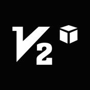
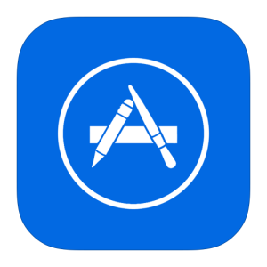

Инструкция по использованию
Для начала работы вам необходимо сгенерировать VLESS-ключ.
После генерации вы получите ссылку следующего формата:
vless://UUID@SERVER:PORT?security=none&type=ws&path=/somepath#MyVLESS
Новые пользователи с легкостью смогут сгенерировать тестовый ключ на 7 дней в главном меню
для ознакомления с сервисом.
После истечения срока вы сможете продлить доступ на платной основе.
Этот ключ может быть использован в клиенте Hiddify или v2box.
Установка клиента для мобильных устройств
V2Box
- Скачайте и установите V2Box:
- Google Play
- App Store
- Откройте приложение.
- Перейдите в раздел Configs.
- Нажмите + и выберите Import v2ray uri from clipboard.
- Передвиньте ползунок Slide to Connect для подключения.
Установка клиента для Windows, macOS и Linux
Hiddify
- Скачайте и установите Hiddify Desktop.
- Откройте приложение с правами администратора.
- Нажмите + в правом верхнем углу приложения.
- Нажмите Добавить из буфера обмена.
- Перейдите в раздел Параметры конфигурации
- В разделе Варианты маршрутизации поменяйте параметр Регион на Другой
- В разделе Входящие параметры поменяйте параметр Режим работы на VPN (Экспериментальный)
- Вернитесь в раздел Главный нажмите на кнопку подключения.
Важно
Встречаются редкие случаи, когда не получается подключиться с первой попытки.
Выполните повторное подключение.